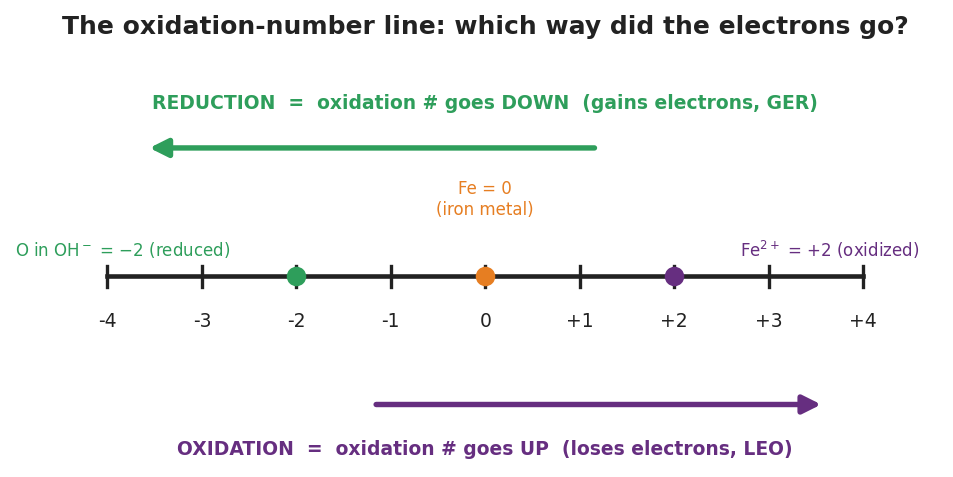
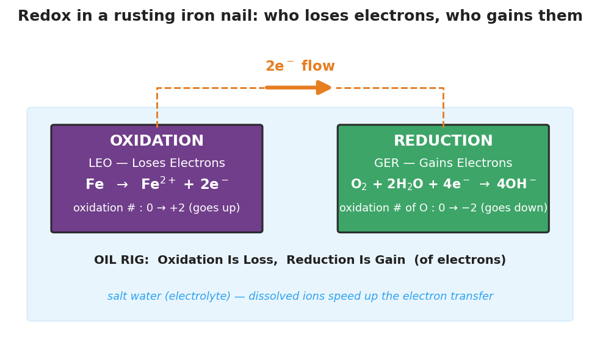

01 Phenomenon
Two identical iron nails sat in water for two days. One was in fresh tap water; the other was in salt water. The salt-water nail is now much rustier — more orange flaking, a cloudier solution — even though both nails were under water the whole time. A third nail, coated in oil, barely rusted at all. Same metal, same air, same two days.
When iron rusts, the iron atoms lose electrons and dissolved oxygen gains them. The electrons move from the iron to the oxygen. The dissolved salt helps those electrons travel through the water, so the salt-water nail rusts faster.
02 Driving question
Why does an iron nail rust faster in salt water than in fresh water — and what is actually moving when iron turns to rust?
03 Notice & wonder
| I notice… | I wonder… |
|---|---|
Turn & Talk #1: Look at the electron-transfer diagram your teacher is projecting. The iron loses electrons and the oxygen gains them. If exactly 4 electrons left the iron, how many electrons must the oxygen have gained? In one sentence, why must those two numbers be connected?
04 Initial model
Before your teacher names the process, study the two halves of the rusting reaction:
Iron half: Fe → Fe²⁺ + 2e⁻ (iron’s oxidation number: 0 → +2) Oxygen half: O₂ + 2H₂O + 4e⁻ → 4OH⁻ (oxygen’s oxidation number: 0 → −2)
Iron’s oxidation number went from 0 to +2 (it went up). Did each iron atom lose or gain electrons? How many? _______________________________________________
Oxygen’s oxidation number went from 0 to −2 (it went down). Did each oxygen atom lose or gain electrons? _______________________________________________
The iron half shows “+ 2e⁻” on the product side; the oxygen half shows “+ 4e⁻” on the reactant side. What does the side of the equation that the electrons are written on tell you about whether they were lost or gained?
05 Investigate
Part 1 — ABCs: Mark the movers (before you name anything)
For each reaction below, the oxidation numbers are given. Find the one element whose oxidation number goes UP (highlight it one color) and the one whose oxidation number goes DOWN (highlight it another color). Do not worry yet about what to call them.
| Reaction | Element that goes UP (more positive) | Element that goes DOWN (more negative) |
|---|---|---|
| 2 Fe + O₂ → 2 FeO (Fe: 0→+2, O: 0→−2) | ||
| Zn + Cu²⁺ → Zn²⁺ + Cu (Zn: 0→+2, Cu: +2→0) | ||
| 2 Ag + S → Ag₂S (Ag: 0→+1, S: 0→−2) | ||
| 2 Na + Cl₂ → 2 NaCl (Na: 0→+1, Cl: 0→−1) |
Find the rule: Across all four reactions, is there always exactly one element going up and one going down? When an oxidation number goes up, did that atom gain or lose electrons?
Part 2 — Track the electrons (use the oxidation-number line)
Use the figure below: moving right on the line (more positive) = oxidation number goes UP = electrons lost. Moving left (more negative) = oxidation number goes DOWN = electrons gained.

For each reaction, complete the tracking table and state which species lost electrons and which gained electrons.
Reaction A: Zn + Cu²⁺ → Zn²⁺ + Cu
| Element | Oxidation # before | Oxidation # after | Up or down? | Lost or gained e⁻? |
|---|---|---|---|---|
| Zn | ||||
| Cu |
Species that lost electrons: ___________ · Species that gained electrons: ___________
Reaction B: 2 Na + Cl₂ → 2 NaCl
| Element | Oxidation # before | Oxidation # after | Up or down? | Lost or gained e⁻? |
|---|---|---|---|---|
| Na | ||||
| Cl |
Species that lost electrons: ___________ · Species that gained electrons: ___________
Reaction C: 2 Ag + S → Ag₂S
| Element | Oxidation # before | Oxidation # after | Up or down? | Lost or gained e⁻? |
|---|---|---|---|---|
| Ag | ||||
| S |
Species that lost electrons: ___________ · Species that gained electrons: ___________
Part 3 — Reading the electron-transfer diagram
Look at figures/redox_electron_transfer.png:

Which way does the orange arrow point — from the iron to the oxygen, or from the oxygen to the iron? What is moving along that arrow? _______________________________________________
The diagram is set inside a pale-blue “salt water” region. Based on the phenomenon, what is the salt’s job in the rusting process? _______________________________________________
06 Make it make sense
For each reaction below, complete the tracking table, then identify the species that lost electrons and the species that gained electrons. These are the same reactions you worked in the Investigation — confirm your work here.
1. Zn + Cu²⁺ → Zn²⁺ + Cu
| Element | Oxidation # before | Oxidation # after | Up or down? | Lost or gained e⁻? |
|---|---|---|---|---|
| Zn | ||||
| Cu |
Lost electrons: ___________ · Gained electrons: ___________
2. 2 Na + Cl₂ → 2 NaCl
| Element | Oxidation # before | Oxidation # after | Up or down? | Lost or gained e⁻? |
|---|---|---|---|---|
| Na | ||||
| Cl |
Lost electrons: ___________ · Gained electrons: ___________
3. 2 Ag + S → Ag₂S
| Element | Oxidation # before | Oxidation # after | Up or down? | Lost or gained e⁻? |
|---|---|---|---|---|
| Ag | ||||
| S |
Lost electrons: ___________ · Gained electrons: ___________
07 Key vocabulary
- oxidation
- the loss of electrons by a species during a reaction; the species' oxidation number goes *up* (becomes more positive); the species that is oxidized is the one that loses electrons (OIL RIG: Oxidation Is Loss; LEO: Lose Electrons = Oxidation)
- reduction
- the gain of electrons by a species during a reaction; the species' oxidation number goes *down* (becomes more negative); the species that is reduced is the one that gains electrons (OIL RIG: Reduction Is Gain; GER: Gain Electrons = Reduction)
- redox reaction
- a reaction in which electrons are transferred, so oxidation and reduction occur together; the electrons lost by the oxidized species are exactly the electrons gained by the reduced species (electrons are conserved)
Use each term in a sentence about today’s investigation. Do not copy the definition — describe something you actually tracked or observed.
oxidation: _______________________________________________ _______________________________________________
reduction: _______________________________________________ _______________________________________________
redox reaction: _______________________________________________ _______________________________________________
08 Revise your model
Return to your Initial Model (the two halves of the rusting reaction). Add vocabulary labels:
Next to the iron half (Fe → Fe²⁺ + 2e⁻), write whether iron is oxidized or reduced, and circle “up” or “down” for its oxidation number.
Next to the oxygen half, write whether oxygen is oxidized or reduced, and circle “up” or “down.”
Write a revised appositive sentence for reduction:
Reduction — _________________________ — happens to the dissolved oxygen when a nail rusts.
Then finish this Because / But / So sentence:
An iron nail rusts faster in salt water than in fresh water because __________________________________________, but __________________________________________, so __________________________________________.
09 Exit ticket
Consider the reaction: 2 Mg + O₂ → 2 MgO (in MgO, magnesium is +2 and oxygen is −2).
(a) Fill in the oxidation numbers before and after.
| Element | Oxidation # before | Oxidation # after | Up or down? | Lost or gained e⁻? |
|---|---|---|---|---|
| Mg | ||||
| O |
(b) Which species is oxidized and which is reduced? Justify using LEO/GER or the direction the oxidation number moved.
Oxidized: ___________ because _______________________________________________ Reduced: ___________ because _______________________________________________
(c) In one sentence, explain how you know the electrons magnesium lost are the same electrons oxygen gained.
10 Explore further
- Rusting nails investigation (multi-day setup, single-period analysis): Pre-start three identical iron nails 24–48 hours ahead — one in fresh water, one in salt water, one coated in oil and placed in water. Students observe and rank the amount of rust, record the variable (water / salt / oil), and reason about *what the salt changed*. The salt does not get consumed; it speeds up the electron transfer by carrying charge through the solution (an electrolyte). Connect the observed rust to the electron-transfer diagram in `figures/redox_electron_transfer.png`.
- Identifying redox in everyday reactions (card sort): Students examine a short set of familiar reactions written with oxidation numbers labeled — iron rusting, a silver spoon tarnishing, zinc dropped in copper(II) sulfate, the combustion of methane. For each, they highlight which element's oxidation number goes up (oxidized) and which goes down (reduced), using the oxidation-number line in `figures/oxidation_number_line.png` as a reference.
- Javalab "Oxidation and Reduction" simulation (optional digital extension): if devices are available, the Javalab redox electron-transfer animation lets students watch electrons leave the metal and join the other species, reinforcing the LEO/GER directionality before or after the card sort.